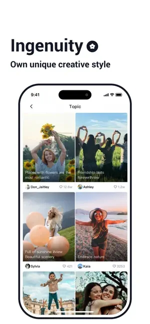

TiPss 实测：拍的时候就把剪的事干完，这条路线为什么走得通
手机端剪辑工具多了去了，但 TiPss 这条"边拍边剪"的路子确实少有人走。本文从同类格局切入，聊聊它做对了什么、又放弃了什么，以及谁真的该用它。
手机端视频剪辑这个类目，说实话竞争已经卷到没边。大厂有大厂的方案，小工具也有各自的绝活，随便哪个应用商店里扒一扒都能掏出一屏来。但 TiPss 这个名字第一次映入眼帘的时候，我特意去它的官网看了看，界面不花哨，而是挑了一条不太有人走的路：把剪辑这件事往拍摄阶段前置。
大多数工具的思路是"先拍后剪"，拍完了坐下来慢慢倒腾，剪时长、加音乐、补特效，流程分得清清楚楚。这套逻辑本身没问题，但实际用下来你会发现，流水账的过程占了你不少时间——素材拍完堆在那儿，真正需要的可能只是开头的高潮和结尾的收尾，中间那一大段全是废话。TiPss 的做法是，拍的时候就让你决定"不拍哪段"，跳过中间过程直接接下一个镜头。听起来像个小改动，但用起来才发现，它在思路上跟同类工具是真的不太一样。
定位：它在同类里算哪一档
先给个坐标：如果你用过某音官方的剪辑工具、用过剪影、用过快影这一类主流应用，那 TiPss 大概在什么位置呢？它不是功能最全的那档，也不是模板最多的那档，但它确实是"拍摄端产品化"做得最干净的一档之一。
主流工具的思路是给你一间装修好的剪辑台，时间轴、轨道、素材库全都在那儿，你拍完了把素材扔进去慢慢调。TiPss 的思路反过来：剪辑台还在，但拍摄环节先帮你做掉一大半决策——什么时候跳、跳多长、跳过什么，你在按下快门的同时就已经在剪辑了。
这个定位决定了它的目标用户不会是所有人。精剪、做复杂特效的人不会选它，但记录日常、做内容批量输出、追求效率的人会用得上。
差异化：三家没做或者没做好的点
边拍边跳，跳过的不是时间是决策
跳跃拍摄是 TiPss 最有辨识度的功能，值得单独说。
普通剪辑是"拍完了再减"，这个流程的问题在于：你得把整段素材都看一遍、标记切点、再删掉冗余部分。对一条几十秒的短视频来说可能快，但如果是日常记录、旅行 Vlog 这种素材量很大的场景，光是筛选素材就够你头疼的。TiPss 把这个决策前置到了拍摄时：拍前几秒，自动跳到下一帧继续，中间流水账的过程直接跳过，最后拼出来的画面本身就是一条有节奏感的片子。
这个功能的适用场景比你想的多：做美食教程的可以从备料直接跳到成品上桌；旅行行程记录能从出发直接切到到达；甚至定格动画这种需要逐帧捕捉的玩法，每移动一点就拍一帧，拍完自动拼好——你得到的不是一堆素材，是成品。

音乐裁剪内置，从长曲里掐副歌
另一个容易被忽略但实际很实用的点是音乐片段裁剪。
主流工具的音乐库很多，但大多是"选一首就全用上"——长歌里可能只有副歌最好听，但你要么整段放（拖慢节奏、还可能触发版权），要么自己另外开一个编辑面板去裁剪。TiPss 把裁剪直接放在了选曲之后：滑块拉一下，选起止点和终止点，只保留你要的那一段。操作不复杂，逻辑很直观。
我自己用的时候有个小体会：裁剪点选在重拍或旋律转折处，衔接感会好很多；开头直接用鼓点或副歌第一句，抓住观众的速度比完整前奏快不少。这些小技巧不是 TiPss 独有的，但它把功能放在了最顺手的位置上，不需要额外跳工具，进阶的音量平衡和参数设置可以去tipss文档翻。
分享不走弯路，两种方式给你选
发布分发这块，TiPss 没走极端。有的工具把分享绑定死在自家平台，有的工具做成导出工具不管分发。TiPss 给了两条路：分享链接（省事，把观众引到 TiPss 平台）和下载重传（观众体验好，直接在目标平台看）。
实际选哪条路取决于你的内容策略：如果想主打 TiPss 平台，用分享链接把观众引过来、养平台账号；如果想多平台同时铺量，下载重传是正解——发布到 TiPss 之后再去其他平台传，不会影响 TiPss 那边的推荐数据。这个取舍逻辑讲得明明白白，不误导用户。
取舍：这些优势不是白来的
说了好的，也得说代价。
首先，上手有一点点门槛。跳跃拍摄这种模式，第一次用你得想清楚每次跳跃的时间间隔——间隔太短画面太碎像在快进，间隔太长又会显得突兀。不像普通拍摄拍坏了重拍就行，跳跃模式的决策是实时的，拍之前脑子里得先过一遍节奏。
其次，平台相对专一。TiPss 目前主打安卓端，从官方下载拿到的安装包体积在 58MB 到 133MB 之间，不算大但也不算极简。安装时如果没放行"允许未知来源"可能会被系统拦截，这个问题在小米、华为、OPPO 这些品牌手机上都有不同的入口，新手第一次装可能要花几分钟找设置。
再有一点，功能定位偏效率而非精修。如果你需要多轨剪辑、复杂遮罩、高级调色这些专业功能，TiPss 可能满足不了——它的重心放在拍摄端和快速成片上，精修这块留给别的工具了。
选购结论：谁选它，谁不选
直接说人话：
如果你是内容创作者、日常记录党、旅行 Vlogger，或者你拍东西最烦的就是拍完一堆素材还要花半小时筛——TiPss 值得装。跳跃拍摄和音乐裁剪这两个功能加起来，能帮你省掉相当多的后期时间，成片的节奏感也比硬剪出来的更自然。
如果你做的是影视级精剪、需要复杂特效和多轨编辑——那就别浪费时间了，去找那些专业工具。TiPss 从定位上就没打算碰这个市场，功能覆盖不到。
另外提一句安装的事：第一次装不上别慌，基本都是存储权限或未知来源没放行。存储权限一定要打开，拒绝的话 app 启动就闪退；存储空间也要留够，装完之后如果还闪退，重启一下手机或者卸载重装大概率能解决。
总结下来，TiPss 这条"拍摄端前置剪辑决策"的路线，在同类工具里确实走得挺有意思。它没有追求大而全，而是在一个具体场景（快速产出有节奏的短视频）里把体验做透了。项目的完整资料为了方便国内访问做了多镜像备份，GitHub、Gitee、GitCode 三处同步更新。如果你刚好卡在这个使用场景上，别犹豫。